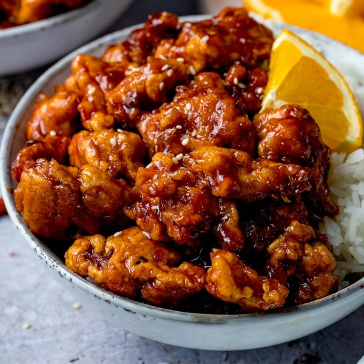

Orange Chicken

Description
Orange chicken is an American Chinese Dish consisting of
battered and fried chicken pieces coated in a sweet-orange
flavored chili sauce. Easy, fast and delicous. Let's begin!
Ingredients
Sauce
- 1 1/2 cups water
- 1/3 cup rice vinegar
- 1/4 cup lemon juice
- 2 1/2 tablespoon soy sauce
- 1 cup packed brown sugar
- 2 tablespoon chopped green onion
- 1 tablespoon grated orange zest
- 1/2 teaspoon minced fresh ginger root
- 1/2 teaspoon minced garlic
- 1/4 teaspoon red pepper flakes
- 3 tablespoon cornstarch
- 2 tablespoon water
Chicken
- 2 chicken breasts (cut into 1/2 inch cubes)
- 1 cup flour
- 1/4 teaspoon salt
- 1/4 teaspoon pepper
- 3 tablespoon olive oil
Steps
- Combine water, rice vinegar, lemon juice,
soy sauce, and orange juice for sauce into
a saucepan over medium-high heat. Stir
in brown sugar, green onion, orange zest,
ginger, garlic, and pepper flakes; bring to
a boil. Remove from heat, and cool for 10 to
15 minutes.
- Place chicken in a resealable plastic bag. Pour
in 1 cup cooled sauce. Seal the bag, and
refrigerate for at least 2 hours. Reserve the
remaining sauce.
- Mix flour, salt, and pepper in another resealable
plastic bag.
- Remove chicken from the marinade and place into
the bag of seasoned flour. Seal the bag and shake
to coat.
- Heat the olive oil in a large skillet over medium
heat. Cook chicken in the hot skillet until browned
on both sides. Remove to a paper towel-lined plate
and cover with aluminum foil. Wipe out the skillet.
- Pour reserved sauce into the skillet and bring to
a boil over medium-high heat.
- Mix together cornstarch and water until completely
smooth. Stir into the boiling sauce. Reduce heat to
medium-low, add the chicken, and simmer, stirring
occasionally, until cooked through, about 5 minutes.